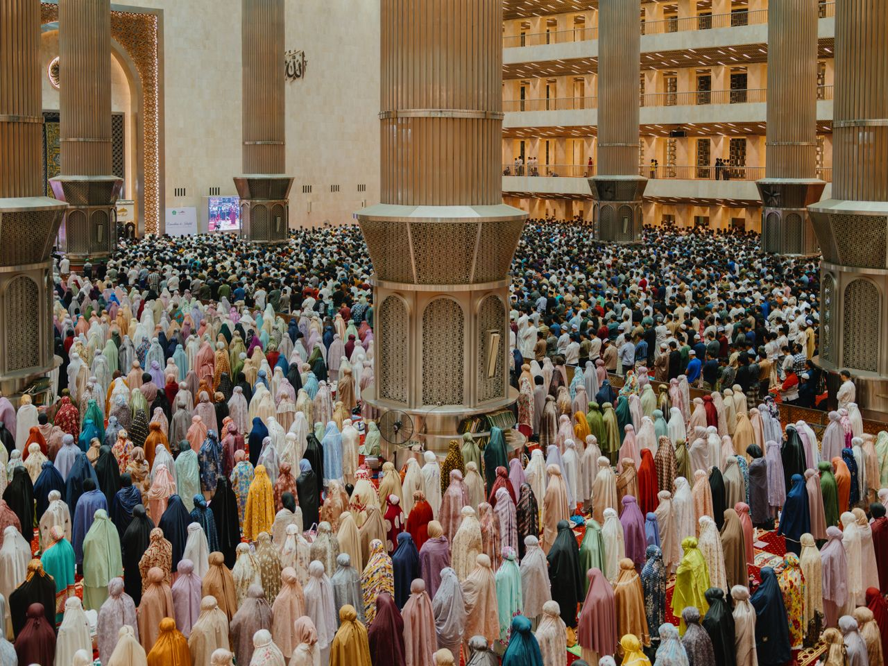

Konsep PAI
Akhlak Dan Tanggung Jawab
Akhlak dibahas bersama adab dan etika serta hubungannya dengan akidah dalam pembentukan karakter muslim. Dalam konteks media sosial, akhlak dapat diwujudkan dengan berkata secara santun, tidak merendahkan orang lain, tidak menyebarkan tuduhan sembarangan, dan bersedia mengoreksi kesalahan.

Tabayyun
Tabayyun berarti memeriksa atau mengklarifikasi informasi sebelum mengambil sikap. Prinsip ini sesuai dengan QS. Al-Hujurat [49]: 6, yang mengingatkan orang beriman agar memeriksa berita yang dibawa pihak yang tidak dapat dipercaya supaya tidak mencelakakan orang lain karena ketidaktahuan lalu menyesal. Penerapan sederhana: cari sumber awal, periksa tanggal dan konteks, bandingkan dengan sumber tepercaya, tanyakan klarifikasi secara baik-baik bila memungkinkan, dan jangan meneruskan pesan jika kebenarannya belum jelas.
يٰٓاَيُّهَا الَّذِيْنَ اٰمَنُوْٓا اِنْ جَاۤءَكُمْ فَاسِقٌۢ بِنَبَاٍ فَتَبَيَّنُوْٓا اَنْ تُصِيْبُوْا قَوْمًاۢ بِجَهَالَةٍ فَتُصْبِحُوْا عَلٰى مَا فَعَلْتُمْ نٰدِمِيْنَ ٦
Materi RPS ini membahas intoleransi dan menegaskan kalau toleransi itu bersikap adil serta santun dalam menyikapi perbedaan, bukan harus menyetujui semua pendapat.
Menjaga Kehormatan Menghindari Prasangka
Konsep Akhlak
Urgensi akhlak, korelasi akhlak, adab, dan etika, serta pembentukan karakter muslim.
Harmonisasi Sosial
Pluralitas, intoleransi, penyebab, dampak, dan solusi dalam kehidupan sosial.
Karakteristik Islam
Agama Islam sebagai pandangan hidup dalam membentuk sikap dan perilaku.
Landasan Al-Qur'an
QS. Al-Hujurat [49]: 6